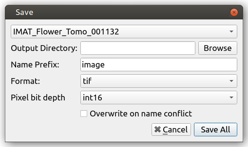

Loading and Saving¶
Loading sand saving data is performed via the Load dataset and Save options on the File menu.
Loading¶
When Load dataset is selected, the following dialog will appear:

This allows you to select the data you wish to load; The Sample entry should be used to select the first projection TIFF file, the remaining TIFF files in the directory will be automatically detected if their filename matches the pattern. The loading dialog will try to automatically find associated files including flat fields, dark frames, 180 degree projections and sample logs.
Once data has been selected, its shape is inspected and the stack index fields are populated as shown below:

The Start and End fields control the range of images that are loaded and Increment defines the interval at which images are selected.
To quickly load only 10 images from a stack, press the preview button, which will set a large enough Increment.
Pixel Bit Depth is used for the estimated memory size calculation, typically images will use 32bit floating point numbers as the pixel format so this can be left at the default value of float32.
Saving¶
The Save option is only enabled when at least one stack is loaded.
When selected the save dialog appears:
This prompts you to select the image stack you wish to save, the directory in which you wish to save it and the name prefix. In the case of TIFF and FITS the individual image filenames will be a concatenation of this prefix and the index of the image in the stack.
The Overwrite option removes checking for existing data of the same name. When disabled an error will be raised if the specified output directory is not empty prior to saving.